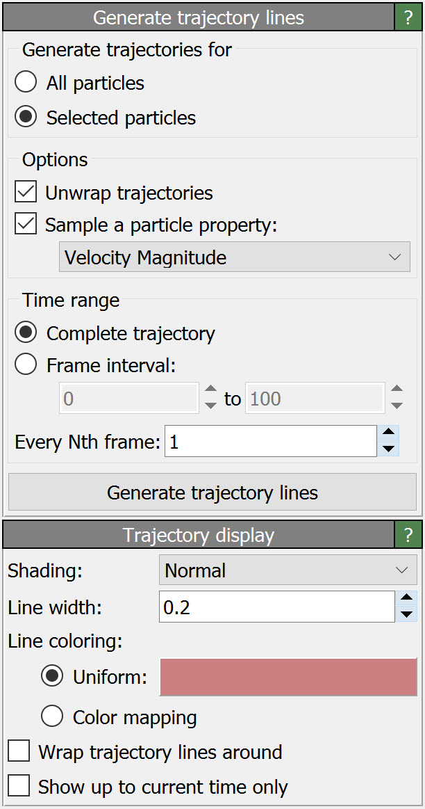

Generate trajectory lines
{kind=link}
This modifier produces a set of continuous lines from the time-dependent particle positions. It can be used to visualize the trajectories of motion of particles.
You can choose between generating the trajectory lines for every particle in the system or just for a subset of the particles. For the latter, you first need to insert a particle selection modifier into the data pipeline to define the selection for the trajectory line generation.
Keep in mind that generating and visualizing trajectory lines for simulations with a large number of particles and/or a large number of timesteps can be prohibitively expensive. Thus, it is typically a good idea to restrict the generation of trajectory lines to a small group of particles of interest.
The button Generate trajectory lines starts the line tracing process. OVITO will read in all simulation frames one by one and sample the particle positions to produce the trajectory lines. The generated lines will be stored in memory, and they will be updated only when you press the button again.

The example animation shows a system of Lennard-Jones particles flowing around two obstacles. The paths of motion of the red marker particles have been visualized using trajectory lines generated by the modifier. The option Show up to current time only of the Lines visual element restricts the rendering of the trajectories to those sections already swept by the particles up to the current animation frame. Thus, the lines appear to be traced by the moving particles.
Sampling a particle property along the trajectories
The modifier has an option to transfer a varying input property of the particles onto the generated trajectory lines. In other words, the time-dependent particle property
becomes a location-dependent property of the generated trajectory lines, making it available for visualizing the variation of the quantity along the motion path of the particles.
Here, for example, the instantaneous velocity of the particle (property Velocity Magnitude) has been sampled and transferred to the trajectory line. The property values along
the trajectory line were then visualized using the color mapping option of the Lines visual element:
Trajectory of a diffusing Lithium atom. Local line coloring indicates the atom’s instantaneous velocity magnitude.
Periodic boundary conditions
Molecular dynamics codes that implement periodic boundary conditions (PBC) typically fold particles back into the box when they cross a periodic boundary of the simulation box. Thus, the time-dependent particle coordinates represent discontinuous trajectory paths. The option Unwrap trajectories of the modifier allows to reconstruct continuous trajectory lines from these “wrapped” (i.e. discontinuous) particle coordinates.
When Unwrap trajectories is active, the modifier uses the minimum image convention to detect crossings of periodic box boundaries and “unwraps” the trajectory lines to make them continuous. The option is active by default, but you can turn it off in case you are working with MD trajectory data that is already in an “unwrapped” form.
Furthermore, note that the Lines visual element (see lower panel) provides the display option Wrap lines around. This option has a reverse effect: The continuous trajectory lines computed by the modifier are folded back into the simulation box during rendering. A trajectory will then appear as a set of separate line segments when it crosses a periodic simulation box boundary.
Note that unwrapping or unfolding trajectory lines correctly is generally possible only if the simulation box does not change, i.e., when the periodicity length remains constant throughout a simulation. If this is not the case, unwrapped trajectory lines will typically show artifacts, in particular if they are folded back into the current simulation cell later on during rendering, because it is impossible to produce a representation that is consistent with both the static trajectory lines and the dynamically changing simulation box.
See also
ovito.modifiers.GenerateTrajectoryLinesModifier (Python API)